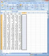
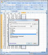
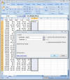
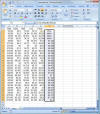
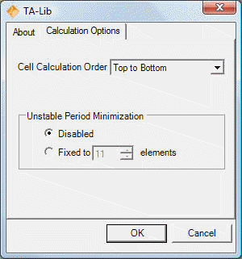
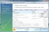

TA-Lib Pro Excel Features
- Includes all the technical analysis functions implemented in the open
source version in an easy to install Excel add-ins.
- Control the calculation order, "top to bottom" or "bottom to top" rows.
- Provides easy setup for unstable period minimization.
Click here to try
for free
Installation
Click here to download the MSI installation
file. Run it on your system.
After the installation is completed, launch Excel. You will be prompt to enter the License on the first
calculation or when changing the TA-Lib options. Enter your license
key to enable full functionality. Trial will work for 30 days.
Upgrade
Installation will overwrite previous version. Launch Excel and
recalculate your spreadsheets. For licensed user, there is no need to
re-enter the License Key.
Using TA-Lib
Here is a step-by-step example for adding a 5 days Simple Moving Average (SMA)
of the open price of a stock.
|
 |
Step 1 - Select Output Location
|
|
All TA functions are array formula. You must first select where the
output is to be placed. In this example, we want the function to be
located at F2 to F30. Once you select the output range, either start
typing the formula or start the function wizard. |
|
 |
Step 2 - Select TA-Lib Function |
| Start the function wizard (press the
'Fx' icon by the formula edit box). Select the function category
[TA-Lib Overlap Studies], and then select TA_SMA. Press OK. |
|
 |
Step 3 - Specify Function Arguments |
Click on 'InputRange'. Select the
open prices located at B2 to B30. The input size must match the
output size you did in Step 1. Click on 'TimePeriod'. Type '5'.
Press OK. |
|
 |
Step 4 - Transform to {Array Formula} |
This step is very important. Before
doing anything else, click on the formula in the edit box and press
CTRL-SHIFT-ENTER. This will add braces '{}' around the formula and
make it an "array formula". As needed, read the Excel Help for how
to enter or modify Array Formula.
You now have the SMA
function completed in column F. |
| |
|
What are the differences between the open-source and pro version?
Both share the same source code for the technical analysis function. The Pro versions integrates
better with Excel to allow more compatibility, features and a simpler installation.
| |
Ta-Lib Pro Excel |
TA-Lib Open-Source |
| Easy Windows Installer |
Yes |
No |
| Excel Integrated Option
Dialog |
Yes |
No |
| Excel 2007 Large Grid
Support |
Yes |
No |
| Calculation order option |
Yes |
No |
| Unstable Period Minimization |
Yes |
No |
| E-mail support |
Yes |
No |
| Source Code |
No |
Yes |
| Free |
No |
Yes |
TA-Lib open-source requires Visual Studio or additional Microsoft
Redistributable to be installed on the end-user machine and is not suitable to
non-developers.
Option Dialog
TA-Lib pro is configurable directly from the Excel interface from a
convenient single dialog (See on the left). The
settings are automatically preserved between Excel sessions.How to open the Option Dialog
For Excel 2007 and newer, select the "Add-Ins" Ribbon and the TA-Lib
button to open the option dialog.
For older Excel version, you can select the "TA-Lib Options..." from the tools menu.
|
 |
How To Uninstall
Activate the Control Panel, double click Add/Remove Programs (for
Vista users click Uninstall a program),
click the "TA-Lib Pro Excel" entry in the list of programs, and click
Remove or Uninstall.

{kind=link}
{kind=link}
{kind=link}
{kind=link}
{kind=link}